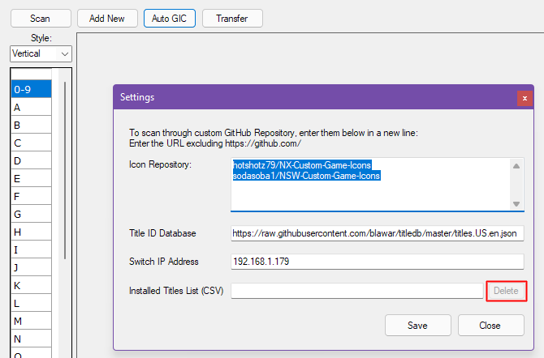
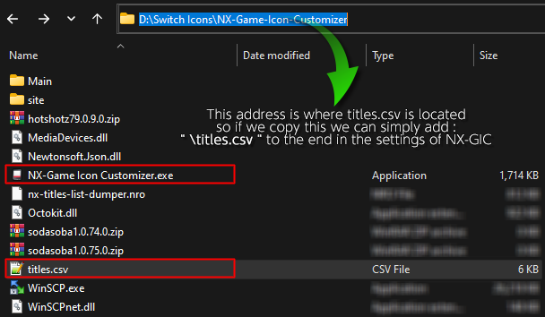
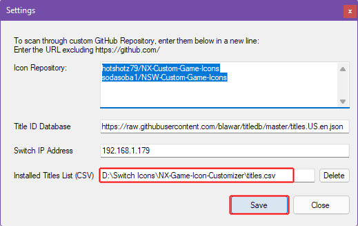
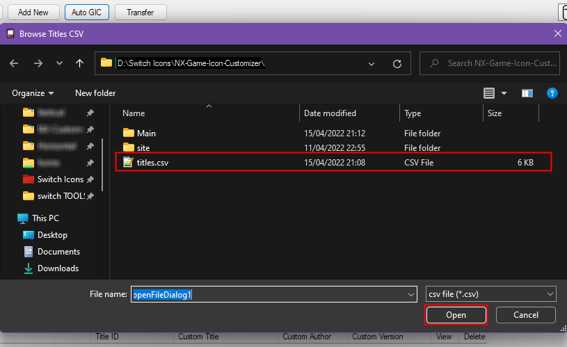

Troubleshooting¶
NX Titles List Dumper CVS error?
are you getting Errors importing titles.csv? lets see if we can fix that.
In NX-GIC go to File > Settings

if you have something in the Installed Titles List (CSV) path click Delete.
then click SAVE
Possible Bug
I recommend closing nx-gic and reopening it, this seems to be better at refreshing the changes made I'm not sure if this is a database issue or how nxgic saves changes made to the program

If you have followed by guide you should have titles.csv in the same folder as nx-gic copy the path Ctrl+C

once again open NX-GIC go to File > Settings
and paste Ctrl+V the nx-gic location we have just copied into Installed Titles List (CSV)
Possible Bug
I recommend closing nx-gic and reopening it, this seems to be better at refreshing the changes made I'm not sure if this is a database issue or how nxgic saves changes made to the program

To Reload titles.csv Click on Auto GIC Hit Ok and locate the titles.csv file

click open and titles installed should work correctly 
Possible Bug
I've noticed errors where nx-gic fails to load the csv correctly and can possibly delete the CSV file from your system so either have a backup or recopy the file from your SD card.
How do I Delete Icons?
The main way to delete icons is to navigate to SD:/atmosphere/contents/TITLEID/ then delete icon.jpg from that folder.
if you want to remove ALL icons you can do one of two things.
Either Disable sys-tweak or navigate to SD:/atmosphere/contents/ and search for icon.jpg or *.jpg and delete all the jpgs
I've updated my firmware and now my switch won't boot
Has your dog or cat updated your switch and now it's not booting?
- Disable all modules before updating
-
if you have updated before doing so you can delete sys-modules (re-add them when they're updated)
or
-
simply delete
boot2.flagfor all modules and enable them one by one -
Delete all your old themes
sdmc:/atmosphere/contents/0100000000001000(qlaunch)sdmc:/atmosphere/contents/0100000000001007(playerselect)sdmc:/atmosphere/contents/0100000000001013(User Page)
Icons are showing as GREY QUESTIONMARK

if an installed icon is showing up as a grey questionmark that usually means the icon used is the incorrect format, this could be due to many reasons but the easiest way to fix it is by:
- be sure the image is resized to 256px x 256px
- The image is saved as .jpg
- the jpg is non-progressive
- the file size under 128kb aim for 120kb